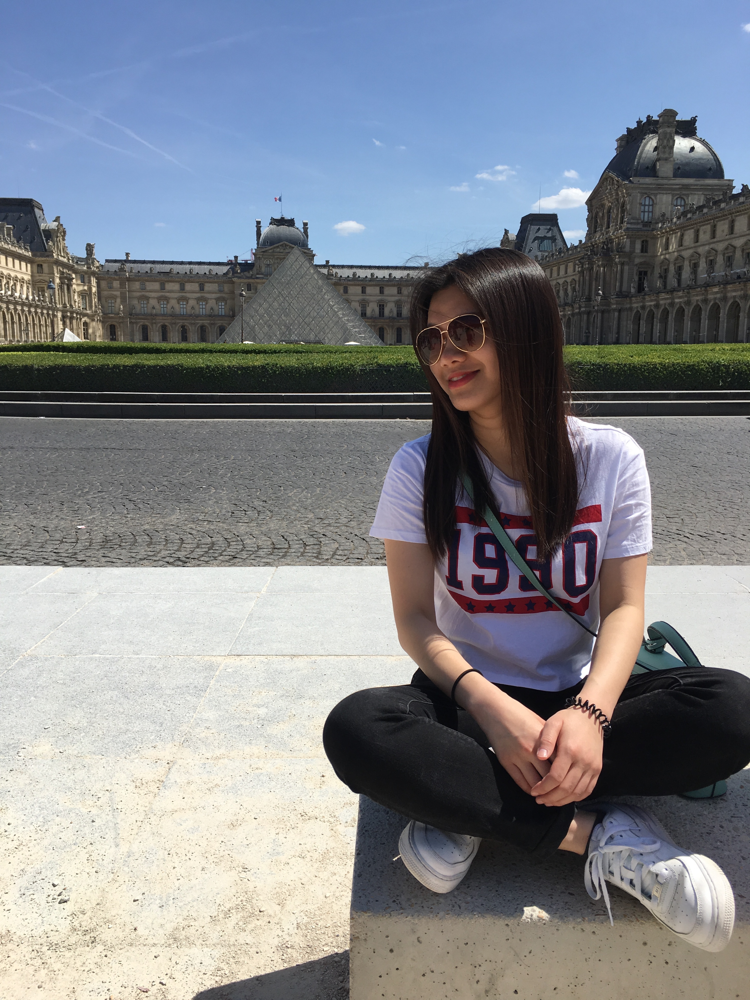

About Us
This website is to keep you informed about current legislative changes taking place in Taiwan, concerning LGBT+ rights. More specifically, this website contains updates and information on the current situation in Taiwan on same-sex marriage, and will help keep on top of developments.
Krystal

This is Krystal. Krystal was born in Taiwan and has recently moved to the UK to study Marketing and Management at the University of Sussex. Krystal's main interest is exploring cross-cultural relations between Taiwan and the UK. She has a strong interest in seeing movies and enjoys traveling.
Em

This is Em. Em was born in Brighton and has recently moved back to the city after some time spent studying Islamic Studies and Law in London, Classical Arabic in Jordan and Italian in Italy. Em is also passionate about cross-cultural relations and queer activism.
Contact Us
If you have any questions or suggestions, feel free to get in touch!
Send us an email to info@lgbt+taiwan.com: